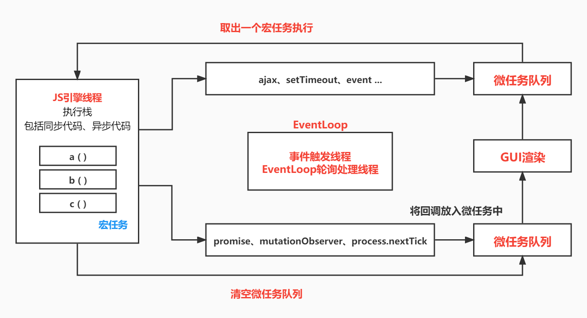

日常的学习笔记，包括 ES6、Promise、Node.js、Webpack、http 原理、Vue全家桶，后续可能还会继续更新 Typescript、Vue3 和 常见的面试题 等等。
EventLoop
EventLoop即事件循环，是指浏览器或 Node 的一种解决 JavaScript 单线程运行时不会阻塞的一种机制，也就是我们经常使用异步的原理。
JavaScript是单线程语言。在当前页面进程中，JS是主线程，而我们常说的异步操作，属于异步线程。
在这里我们就要先清楚两个名词，进程 和 线程。
- 进程：是计算机分配任务的最小单位。计算机分配任务时，会按照 进程 进行任务分配。
- 线程：一个进程中包含多个线程。
对于前端来说，我们接触最多的浏览器，就是由多个进程组成的。
浏览器进程
关于浏览器的进程，包含以下几点
每个标签页是一个进程，他们互不影响。假设我们当前某个页面出现问题卡住了（如死循环等），其他页面不会被当前页面影响。
每个浏览器有一个主进程，也就是我们的用户界面。
渲染进程，每个标签页里，都有一个渲染进程，而 渲染进程中又包含多个进程。
网络进程，发送网络请求以及处理网络请求等。
GPU进程 与 3D绘制进程，用来提高页面的加载速度，以及加载复杂的页面特效。
第三方插件 等等…
渲染进程
渲染进程中包括多个线程
- GUI渲染线程 ，用来对页面进行渲染，也可以叫做 UI渲染线程 。
- JS引擎线程 ，用来加载页面中的JS语法，他和 GUI渲染线程 互斥，也就是说他们两个只能同时加载一个线程。
- 事件循环线程 ，也就是 EventLoop。他也是一个独立的线程。JS执行时可能会调用异步方法，而这些方法就是 EventLoop 调度执行的。
click、setTimeout、ajax等也是一个独立线程。
搞懂 EventLoop ，需要先明白 堆栈队列 等概念，后续有时间的话我会更新一篇文章专门对此概念进行详述，感谢大家的关注。
宏任务和微任务
- 宏任务：
script、ajax请求、ui 渲染、setTimeout、setInterval、postMessage、MessageChannel、SetImmediate、event事件 - 微任务：
promise、mutationObserver、process.nextTick

JS在执行时，会 自上向下执行，也就是一个 执行栈，其中包括 同步代码 *和 *异步代码。
遇到同步代码时，如果是函数会创建一个 执行上下文，并放入执行栈中，执行完毕后再出栈。
遇到异步代码时，我们需要将异步任务放入到一个 事件队列（或消息队列）[ 队列的特点是先进先出 ] 中（内部会调用浏览器提供的Api来将任务放入队列）。
当我们执行上下文 全部执行完毕 后。事件队列 会不停的 对队列进行扫描*，并将队列里 *符合规则（执行完毕或到达时间） 的任务放到执行上下文中并执行。而进行扫描的队列就是 事件循环线程，他会对 执行栈 进行循环检测 ，当 执行栈为空 的情况下，才会将 符合规则的一个任务放到执行上下文中并执行（注：每次只放入一个）。
上述的这些异步任务，我们还可以称其为 宏任务 。其中包括一些特殊的异步任务，我们可以称为 微任务。
每一次循环检测的时候，都会创建一个 宏任务队列（可能会有异步任务，也可能会没有）。而每一个宏任务队列中，都包含一个微任务队列。这个微任务队列会在每一次循环检测时，将结果进行清空。
换言之就是，每次循环检测会创建一个宏任务队列，这个队列中包含一个微任务队列。宏任务队列清空并输出结果之前，会先对微任务队列进行任务扫描，并清空。然后才会扫描符合规则的宏任务，并将任务放到执行栈中。
如果存在UI渲染等情况，则会在每次循环的微任务队列清空完毕后，对页面进行渲染。
代码题
通过以下几道代码题可以更好的帮我们理解上述概念。
微任务和UI渲染
1
2
3
4
5
6
7document.body.style.background = 'red';
console.log(1)
Promise.resolve().then(()=>{
console.log(2)
document.body.style.background = 'yellow';
})
console.log(3);结果是
1、3、2、yellow，且屏幕不会出现闪烁的情况。因为页面的ui渲染会在每次微任务队列清空之后执行，所以不会出现闪烁的情况。
要验证此结论，可以通过添加一个宏任务事件来进行测试。
1
2
3
4
5
6
7
8
9
10document.body.style.background = 'red';
console.log(1)
Promise.resolve().then(() => {
console.log(2)
document.body.style.background = 'yellow';
})
setTimeout(() => {
document.body.style.background = 'green';
}, 0);
console.log(3);在多次刷新页面后，可以看到有一个小小的闪烁的情况。
通过这个测试，我们也可以得到一个更严谨的言论。UI渲染（GUI渲染）会在达到渲染时机时，才会出现闪烁的情况。
事件任务
1
2
3
4
5
6
7
8
9button.addEventListener('click',()=>{
console.log('listener1');
Promise.resolve().then(()=>console.log('micro task1'))
})
button.addEventListener('click',()=>{
console.log('listener2');
Promise.resolve().then(()=>console.log('micro task2'))
})
button.click(); // click1() click2()结果是
listener1、listener2、micro task1、micro task2。首先我们先明确一个概念，那就是
button.click()相当于将两个事件当成普通函数来执行，也就等价于以下代码1
2
3
4
5
6
7
8
9let fn1 = () => {
console.log('listener1');
Promise.resolve().then(() => console.log('micro task1'))
}
let fn2 = () => {
console.log('listener2');
Promise.resolve().then(() => console.log('micro task2'))
}
fn1(); fn2()所以就可以理解成，先执行 执行上下文 中的函数，再执行事件循环队列中的异步事件。
但是如果我们不使用
button.click()，而是直接使用点击事件呢？1
2
3
4
5
6
7
8
9
10
11<button id="button">按钮</button>
<script>
button.addEventListener('click', () => {
console.log('listener1');
Promise.resolve().then(() => console.log('micro task1'))
})
button.addEventListener('click', () => {
console.log('listener2');
Promise.resolve().then(() => console.log('micro task2'))
})
</script>结果是
listener1、micro task1、listener2、micro task2。上述代码中的点击事件属于宏任务，所以我们相当于向宏任务队列中添加了两个宏任务，根据宏任务队列的执行原则，会先清空微任务队列。所以会输出上面的结果。
定时器任务
1
2
3
4
5
6
7
8
9
10
11
12Promise.resolve().then(() => {
console.log('Promise1')
setTimeout(() => {
console.log('setTimeout2')
}, 0);
})
setTimeout(() => {
console.log('setTimeout1');
Promise.resolve().then(() => {
console.log('Promise2')
})
}, 0);结果是
Promise1、setTimeout1、Promise2、setTimeout2。上述代码在执行时，会先执行最外层的 script脚本（宏任务），会先将外层的微任务Promise1放入微任务队列，宏任务setTimeout1放入宏任务队列*。在 *执行script宏任务 时，会 清空微任务队列，也就是会先将 Promise1输出 。然后将里面的 宏任务setTimeout2再次放入宏任务队列。这时根据宏任务队列顺序，需要 执行宏任务setTimeout1，将 setTimeout1输出，然后再将微任务Promise2放入微任务队列。这时 执行宏任务setTimeout2，先 清空微任务队列，输出Promise2，随后再将 setTimeout2输出。
常见面试题
1
2
3
4
5
6
7
8
9
10
11
12
13
14
15
16
17
18console.log(1);
async function async () {
console.log(2);
await console.log(3);
console.log(4)
}
setTimeout(() => {
console.log(5);
}, 0);
const promise = new Promise((resolve, reject) => {
console.log(6);
resolve(7)
})
promise.then(res => {
console.log(res)
})
async ();
console.log(8);结果是
1、6、2、3、8、7、4、5。思路依旧是根据事件循环线程的输出思路，将宏任务放入宏任务队列，微任务放入微任务队列。宏任务队列执行时，会先清空并输出现有微任务队列中的结果，然后再将宏任务中的结果输出。所以最终结果就是上述结果。
本篇文章由莫小尚创作，文章中如有任何问题和纰漏，欢迎您的指正与交流。
您也可以关注我的 个人站点、博客园 和 掘金，我会在文章产出后同步上传到这些平台上。
最后感谢您的支持！